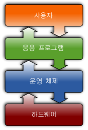

운영체제(OS)는 하드웨어를 관리하며응용소프트웨어을 실행하기 위해 서비스를 제공하는 시스템 소프트웨어이다.
싱글태스킹 운영체제는 한 번에 하나의 프로그램만 실행할 수 있으나
멀치채스킹 운영체제는 하나 이상의 프로그램을 동시에 실행할 수 있다.
단일 사용자 운영체제는 사용자 구별없이 여러 프로그램 실행을 허용한다.
단중 사용자 운영체제는 멀티태스킹을 확장하며 여러 사용자가 동시에 시스템과 상호 작용할 수 있게한다.
커널은 컴퓨터 하드웨어 장치에 대한 가장 기초 수준의 제어권을 제공한다.
네트워크는 서로 다른 원격의 컴퓨터와 자료를 공유하기 위해 사용한다.